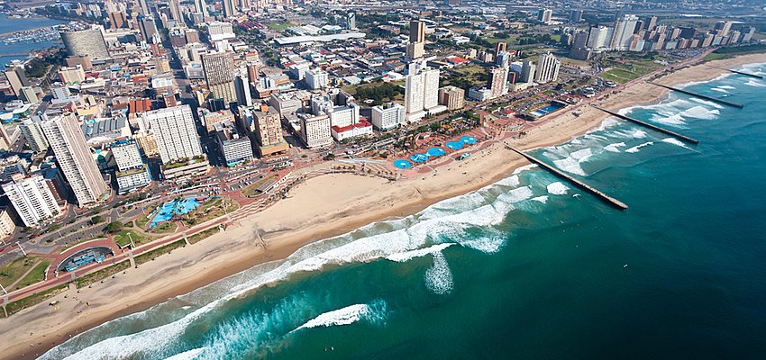

- 
-

-


Es un país que sí te despertará emociones, unos paisajes como ninguno, la naturaleza en su máxima expresión y ciudades entre montañas y bahías. Es un país que puedes visitar durante cualquier época del año, por su ubicación logra un equilibrio de buenas temperaturas. Podrás moverte en transporte público, trenes, alquilar un auto o incluso usar Uber.
Las ciudades que más recomendamos visitar son Ciudad del Cabo, Durban y Johanesburgo. Te recomendamos informarte de las zonas en que puedes desplazarte con seguridad y seguir las reglas básicas para no tener ningún contratiempo. Si quieres ver los animales salvajes lo más cerca posible te recomendamos los safaris en los parques naciones, como el parque Kruger en el que podrás hacer tu safari y ver de primera mano elefantes, leones, jirafas, hipopótamos, hienas, cebras, entre otros.


Otro país que tal vez no esté en la mira de los más turísticos pero que te sorprenderá de forma muy positiva, conocer nuevas culturas y sitios enigmáticos es un lujo que te puedes dar antes de los 30, ya que las dudas se transforman en experiencias y Túnez es un lugar para vivirlas.
No podrás decir que fuiste a Túnez si no pasaste por Cartago, esta antigua ciudad romana centro de su imperio, allí sus ruinas son tesoros y tienen mucho para mostrar a sus visitantes. Sidi Bou Said es de las ciudades que más atrae a los turistas, se puede contemplar el Golfo de Túnez y sus casitas blancas siempre son referente de buenas fotografías. Recorrerte el desierto es uno de los planes favoritos de los turistas, no te lo vayas a perder. O visitar el escenario de famosas películas en Mos Espa, visitar el desierto de sal de Chott el Jerid, el mercado de camellos de Tozeur o La Casa de Africa en Thysdrus. Tal vez con esto te animes no solo a ir a Túnez sino a pasar más tiempo del que pensabas.

Este país cargado de colores, olores y sabores te hará vibrar desde que tu llegada. No le temas a probar su exótica cocina y piérdete entre los mercados y callecitas que te permitirán explorar de primera mano la cultura marroquí. Puede empezar por recorrer las medinas y mezclarte entre los locales, tomarte un buen té que es la bebida por excelencia en Marruecos.
Puedes aprender un poco sobre espiritualidad en las madrazas, que son lugares de enseñanza religiosa a las que atienden personas de todo el mundo, la más famosa es Ben Youssef que queda en Marrakech. Y hablando de esta ciudad que viene siendo la más importante del país no dejes de visitar los monumentos considerados patrimonio de la humanidad, también la Plaza de Yamaa el Fna, Jardin Majorelle, el Palacio de la Bahía, por nombrar algunos. Las otras ciudades que te recomendamos son Mequinez, Fez, Rabat y Casablanca. No te quedes sin pasar al menos una noche en el desierto del Sahara, ya con esto valdrá la pena el costo del viaje, es una experiencia alucinante.
 |
 |